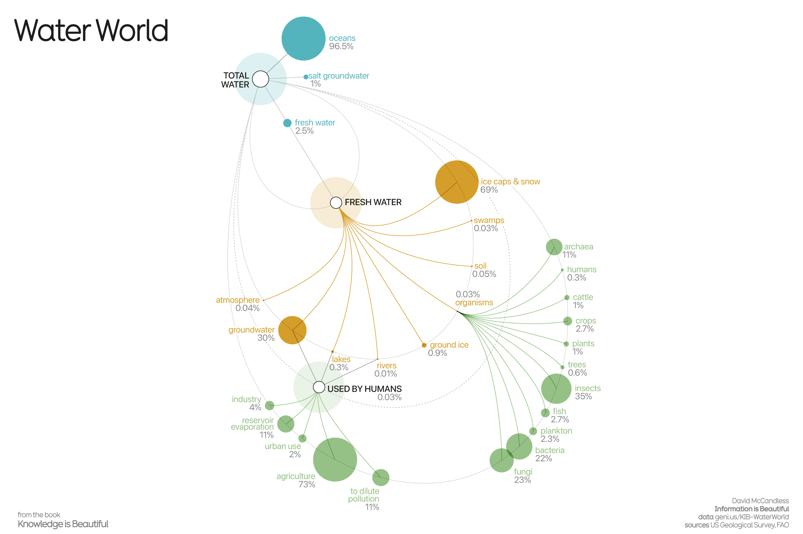
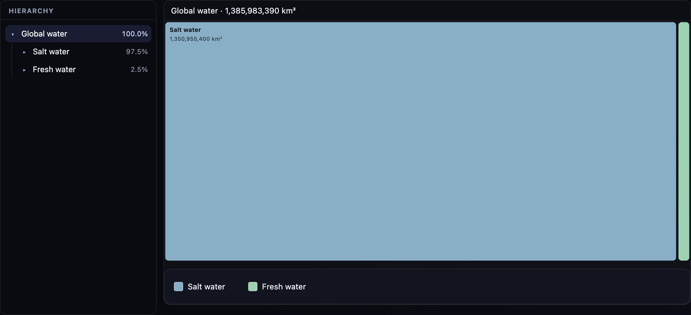
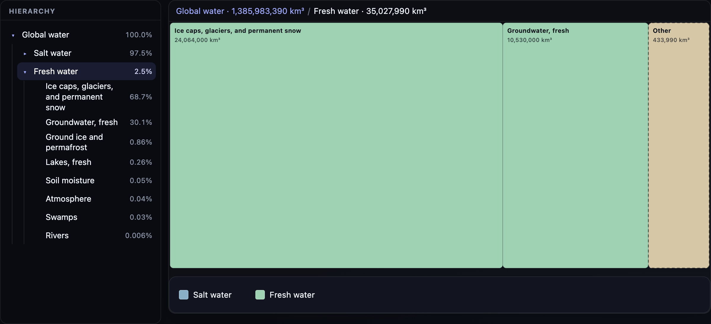
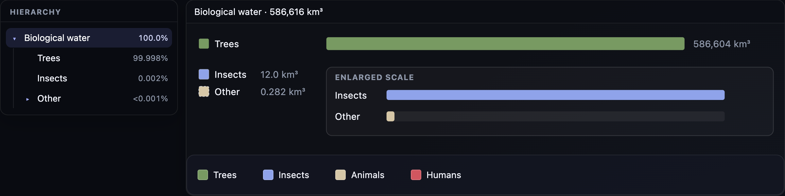
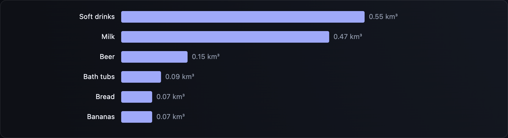

Visualization Critique and Redesign Report
Original visualization and context
The visualization I selected is Water World on Information is Beautiful. That page credits David McCandless, with research by Miriam Quick, and links its data sources. It shows how water on Earth is divided among oceans, ice, groundwater, rivers, organisms, and water people use. Volumes here are cubic kilometres from the course table, loaded as JSON.

The intended message is a hierarchy. Total water breaks into large branches, then into smaller reservoirs, so a reader can see what sits inside what and which stores are large. The audience is a general reader interested in science or the environment. The tasks are to follow that part-to-whole structure, compare amounts, find the largest and smallest freshwater stores, and see how small fresh water is beside the oceans.
Critique
Two choices make the poster work. Color and dashed curves separate the levels, and the branches bend into a water-drop outline, so the hierarchy is easy to follow without the empty corners of a standard tree. Circle size, color, and the connecting lines also support one another. A percentage is printed beside many circles, and the picture is memorable, which matters for a public graphic.
Circle area is still a weak channel for these magnitudes. The ocean is almost all of the water, so the other circles shrink toward dots. Ice cannot be compared with groundwater, or a river with a lake, by area. The percentages have to carry that comparison, and the smallest labels are the hardest to read. Rectangle area, among peers at one level, would make that comparison possible.
The tree also draws every row as a part of its parent, which the table does not always support. Biological water, 1,120 km³, does not add into the fresh-water total, and water in trees, 586,604 km³, is far larger than that biological total. Blood and brains sit inside bodies. Rain, human use, and groundwater extraction are yearly flows. On the same branches as stored water, they double-count or mix a stock with a flow. The remedy is to draw only true partitions, and to give flows a chart of their own.
One static frame has to hold every level, every label, and every amount. The overview is clear, and the small reservoirs are not. Opening one branch at a time, and folding a dominated tail into one group, keeps the hierarchy and reaches those small stores on a later click.
Redesign rationale
The redesign is two treemaps and two bar charts.
First, volume is rectangle area, one level at a time. The opening view is salt water beside fresh water. If one child is at least 80 percent of the view, the rest fold into a dashed Other, and a click opens that group under the same rule. Fresh water has no single store that large, so ice and fresh groundwater stay visible, and only the tail under 8 percent becomes Other. A slice too thin to click is drawn wider, and the percentage stays the true share. Peers are compared together, and a click reaches the small stores.


Second, rows that are not one partition are split apart. Global stocks are one treemap. Biological water is bars at the true volume: trees, insects, and other. Humans sit inside Other, with pigs, horses, and blue whales. Only organisms listed in the dataset are drawn. Trees are included, though 586,604 km³ lies outside the 1,120 km³ total. Blood and brains stay inside bodies. Yearly flows, and water reported inside products, are horizontal bars, so length can be compared. Rainfall, 110,000 km³ a year, is stated in text on the visualization page, because on that axis it would flatten the extraction bar. A flow is no longer drawn as a child of a stock.


Third, the hierarchy stays, but it leaves the area encoding. A tree beside each chart lists the real branches, and each label is that branch’s share of its parent. The arrow opens a branch without moving the chart. The name focuses the treemap, and the path on the chart steps back. Seeing what contains what no longer requires another label inside every rectangle.
Original versus redesign
Salt against fresh, and ice against groundwater, are easier to compare, because each view uses area among peers. Flows and products stay off the reservoir trees, on a length scale of their own.
The trade-off is the poster. The drop shape and the single memorable image are gone, and a reader who never clicks still misses the rivers. A widened slice overstates area, even though the percentage is correct. The biological view is dominated by trees, and species the table does not name are left out. The volumes follow the published table, including its rounding, rather than a new survey.
References
- Information is Beautiful. Water World.